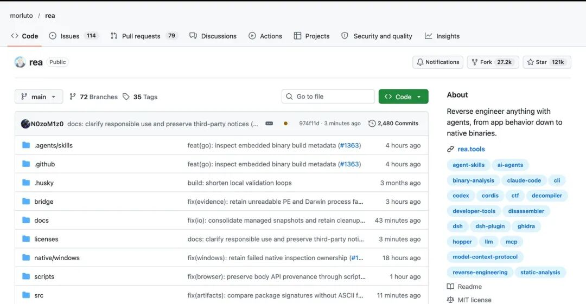
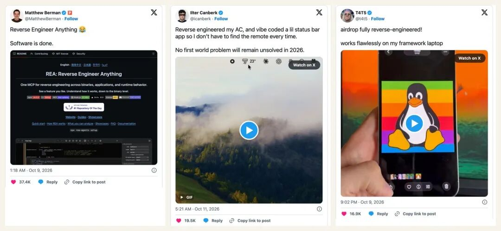
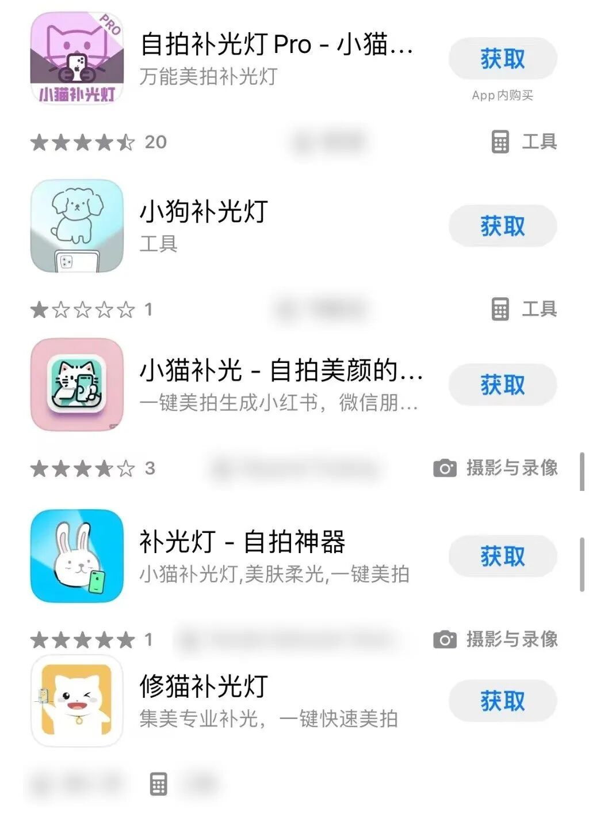
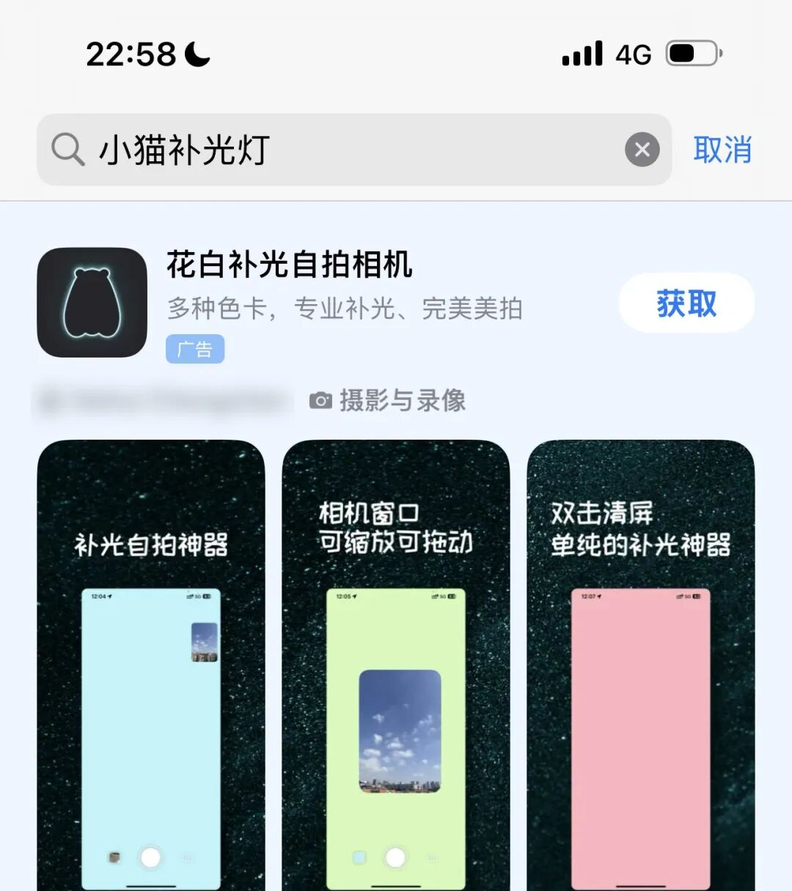
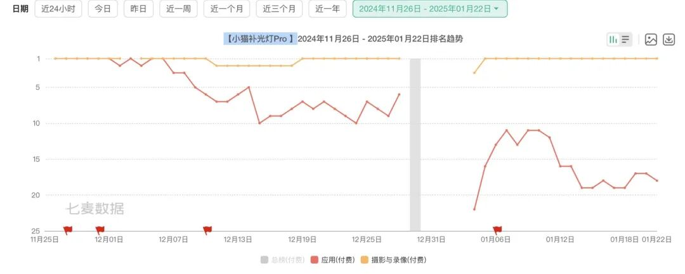
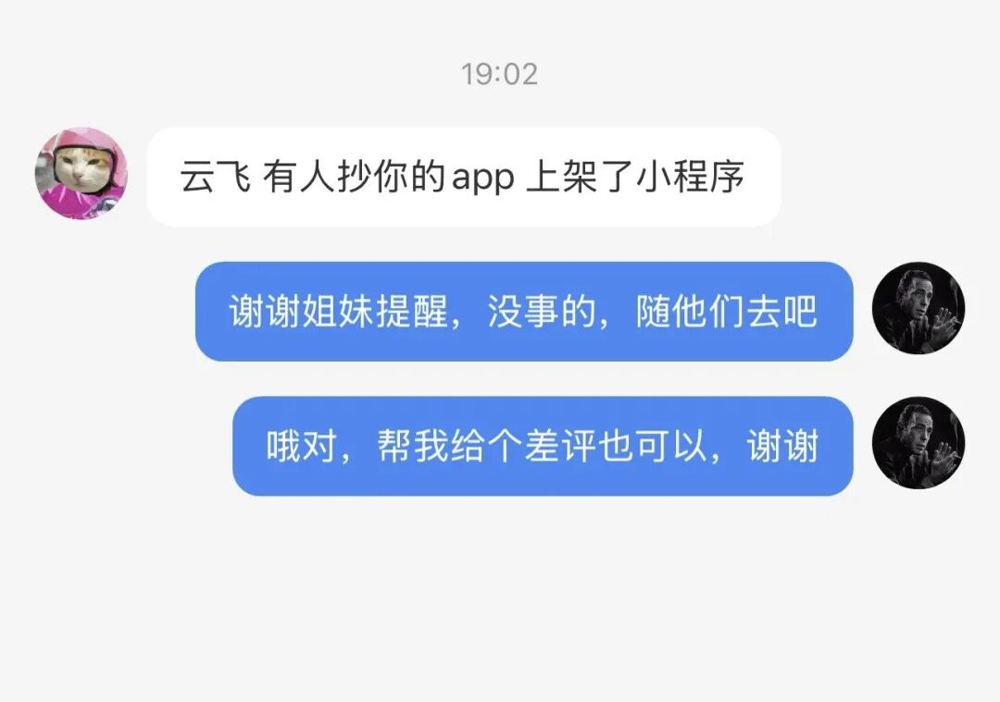
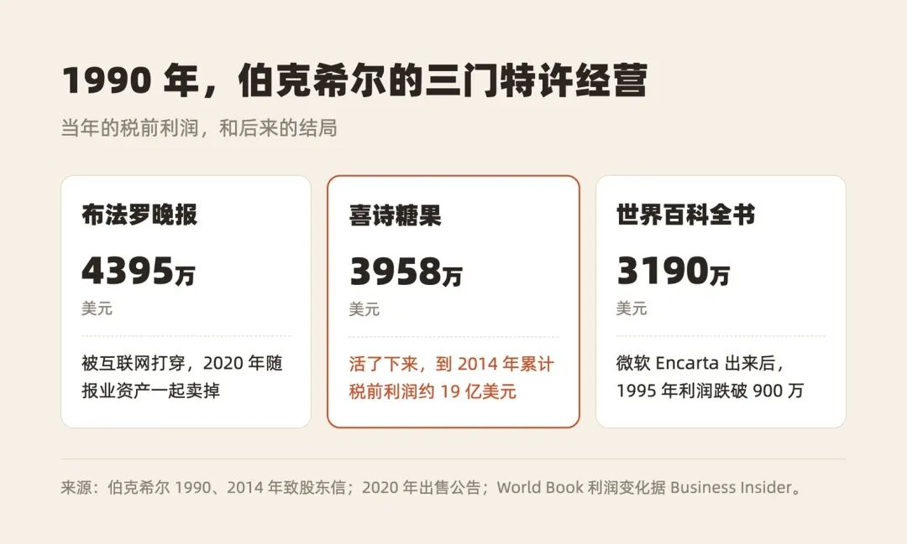
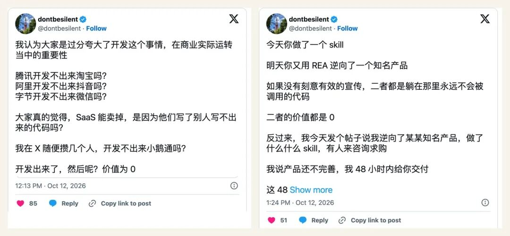
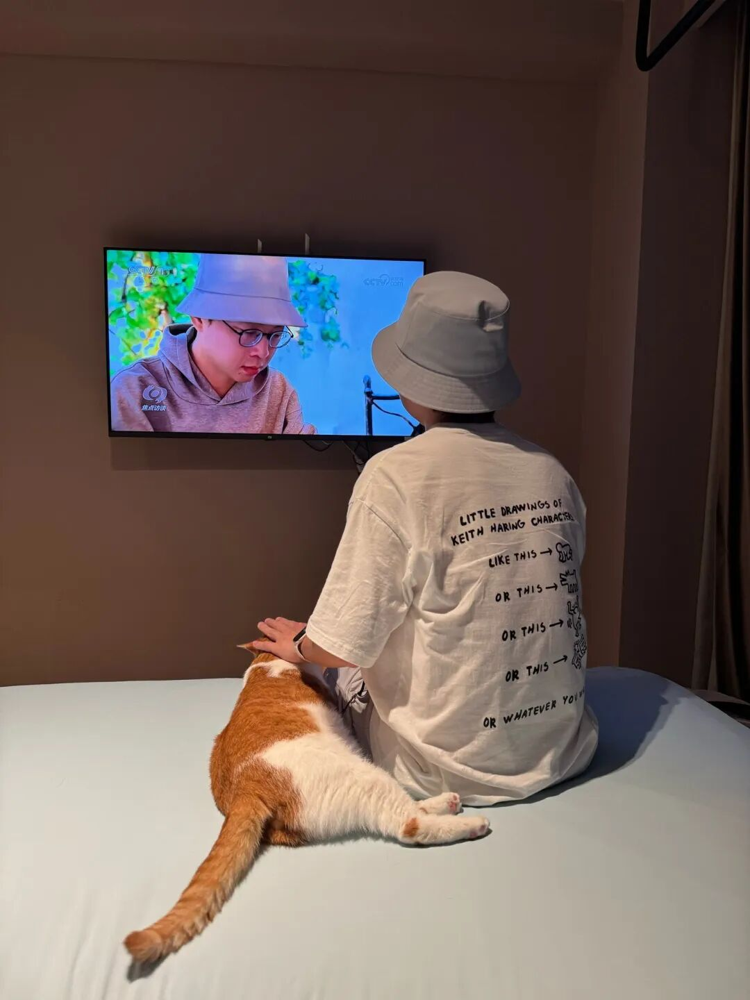

当AI可以逆向一切的时候，我们还剩下些什么？
来源：微信公众号 归档日期：2026-10-12 抓取状态：成功 原文字符：3979｜配图：9 张
摘要速览
- AI正在逆向一切。 最近REA这个项目火得有点离谱，全称Reverse Engineer Anything，逆向一切，我写这篇的时候GitHub上已经12万star了。 我让agent读了下这个项目的运行逻辑，说起来倒也不那么复杂，它也是建立在之前的逆向生态基础上迭代出来的，就是把Ghidra、Hopper这些专业逆向工具通过MCP接给coding agent，你看中哪个软件的哪个功能，让agent去拆，拆完给你证据，再照着给你自己的项
核心内容
（待补充）
可执行启发
（待补充）
我的想法
（待补充）
原文沉淀
来源：https://mp.weixin.qq.com/s/l5RyP8ZVHJiESgS_m-D8CA 平台：weixin｜作者：花叔 抓取方式：cdp｜字符数：5369｜图片：9
AI正在逆向一切。
最近REA这个项目火得有点离谱，全称Reverse Engineer Anything，逆向一切，我写这篇的时候GitHub上已经12万star了。

我让agent读了下这个项目的运行逻辑，说起来倒也不那么复杂，它也是建立在之前的逆向生态基础上迭代出来的，就是把Ghidra、Hopper这些专业逆向工具通过MCP接给coding agent，你看中哪个软件的哪个功能，让agent去拆，拆完给你证据，再照着给你自己的项目做一个。
差不多同一时间，另一个开发者用Claude Opus 5.5加Rust把Adobe七件套复刻了一遍，开源免费，起因是他被Adobe的提前退订违约金恶心到了，还在Hacker News上留了一句Software is over。X上一下就热闹起来了，有人把自家空调逆向了做成Mac状态栏应用，有人把AirDrop搬到了Linux笔记本上，Matthew Berman转REA的时候只写了一句Software is done。

其实呢，从2024年sonnet 3.5开始，软件行业，尤其是软件中的代码部分，早就再不停加速消亡了。即使你不用这个REA项目，你丢一个你想复刻的软件，或者你想要的产品功能，最好的coding agent也基本能给你复刻个小样出来的。
但是，你也清晰的知道，微信、抖音、支付宝、淘宝、拼多多、美团、携程、12306，这些你天天用到的app是不会被逆向的，或者说逆向了也毫无价值，因为他们算是商业产品，他们业务的核心价值并非体现在「代码」上，那究竟在哪呢？
我先讲个我自己被「逆向」的故事，我们再慢慢聊。
我被「逆向」的那一年
24年11月，我用Cursor花一个小时做的小猫补光灯上架，三四天之后在小红书有了不错的流量，然后抄袭就开始了，小喵、喵喵、小猫猫、小狗、小兔，安卓、iOS、小程序上一下冒出来几十个，安卓应用市场上还有人直接偷了我的logo和名字，再后来同赛道一家百亿市值的大厂也来致敬了一下。

这是那年11月底我在App Store随手搜的，当然，你甚至也可以说这都算不上逆向，截两张图丢给当时的Cursor就能轻松复刻了。
有个山寨产品甚至买了我的关键词广告，当时我都想提醒那哥们，以这个工具的LTV买广告ROI是真回不了正的，他大概是新闻看多了，以为我靠小猫补光灯赚了不少钱。

结果是，他们获得了一个补光灯App，拿下AppStore付费榜第一、上人民日报、被央视采访的，却只有我一个。

这次为了写这篇，我让agent去扒了一下苹果国区的搜索接口，24年11月之后上架的同类App抽样有70个左右，其中39个一个评分都没有。
功能差不多，那为啥是我？那段时间我最常收到的私信就是这种：

当时群里有个兄弟的评价我到现在都很喜欢：花生做这个收获了一群姐妹，它们做这个收获了一个补光灯。
误区一：软件已死
REA之后最常见的两个误区，第一个是觉得软件已死。其实死掉的是写代码这个开发技能，软件服务的定义范围可比代码广得多了。
芒格94年在南加大的演讲里讲过伯克希尔纺织厂的事：厂里的人跑来跟巴菲特说，发明了一种新织布机，能干双倍的活，巴菲特说，但愿它没用，要是有用我就关厂。因为所有同行都会买同一台织布机，省下来的钱最后全流到买布的人手里。芒格在那次演讲里说，微观经济学的一大教益，是分辨技术什么时候会帮你、什么时候会杀了你。
AI coding就是这台新织布机。人人都能用Claude Code一晚上复刻一个App，写代码的能力你有别人也有，它就定不了价了，省下的成本全流到了用户手里（Adobe平替免费开源，最开心的是用户）。
那布还值不值钱？护城河这个比喻是巴菲特的，他93年的股东信里就写过「在经济城堡周围筑起一道保护性的护城河」，不过他自己从没给护城河分过类，现在大家常说的分类出自晨星，Pat Dorsey 08年的书里分成无形资产（品牌、专利、牌照都算）、转换成本、网络效应、成本优势四类，晨星后来又加了一类有效规模。我挨个想了一遍，AI逆向打穿的基本只有一条，复制成本。
过去逆向一个软件要花很多年（一群玩家把超级马里奥64反编译回C代码，干了两年），现在这个成本接近零了，靠这一条活着的软件确实危险，功能单一、价格不低、用户又不太喜欢的工具类软件，清理、PDF转换、录屏这些，我估计会先被一波一波的免费平替冲击。
剩下几条它基本碰不到。微信被来往、子弹短信、多闪复刻过好多次，功能都做得出来，你的朋友不会跟着你搬家。Adobe这次第一个挨打，我觉得是因为它最招人恨，用违约金硬造出来的转换成本，等于拿用户的怨气砌墙，替代品一便宜，怨气就成了燃料，不过PSD是行业事实标准、学校里教的也是PS，我猜它不至于马上完蛋，先丢的大概是定价权。
巴菲特自己也被技术打穿过护城河。1990年伯克希尔有三门很赚钱的特许经营生意，布法罗的报纸、喜诗糖果和《世界百科全书》，后来报纸被互联网打穿了，百科全书更早，先被微软的光盘百科Encarta打穿，活下来的是卖糖的那个。

误区二：靠逆向付费软件赚钱
第二个误区，是觉得自己能通过REA逆向付费软件赚到钱。会有人通过复刻软件赚到钱，但赚钱的原因基本不会是他能复刻。
靠逆向别人的产品做生意，1982年的康柏就干过一回。它想造和IBM兼容的电脑，卡在IBM受版权保护的BIOS上，于是搞了个净室设计，一组工程师只研究IBM的BIOS，把它的行为写成说明书，一行代码都不许抄，另一组从没见过IBM的代码，只看说明书从零写一个新的，IBM PC就这么被整个逆向了。后来Phoenix公司把净室BIOS授权给了所有兼容机厂商，兼容机满天飞，IBM失去了对PC的控制，可钱也没流到这些逆向者手里，而是流向了两家逆向不了的公司：微软（它当年在合同里保住了把DOS卖给别人的权利）和英特尔（85年拒绝把386二次授权出去）。到1996年，微软和英特尔的净利率大概都在25%左右，康柏是6.6%左右，2002年被惠普收购了。
国内的版本是团购，千团大战最热的时候，据团800统计团购网站有5000多家，Groupon的模式谁都能抄，最后赢的美团靠的是地推、商户和履约。
dontbesilent这两天在X上说的也是差不多的意思，开发出来了，然后呢？没有刻意有效的宣传，逆向出来的产品就是躺在那里永远不会被调用的代码。

他那条下面有个回复我看了挺想笑的，说24小时后客户说我自己用claude fork了一个🤣。如果你卖的只是我做得出来，客户自己也做得出来。
那到底什么逆向不了
本雅明快一百年前写过一篇《机械复制时代的艺术作品》，他担心照相、印刷这些复制技术会让艺术品的灵韵枯萎，而灵韵就是原作的此时此地，它在什么时候、什么地方、经历过什么。他对这件事的态度挺矛盾的，一边觉得复制让作品走到了更多人面前，一边又觉得原作在场的分量被一点点耗掉了。
我觉得逆向这件事也可以这么看，能被逆向的都是快照，逆向不了的是此刻。 安装包是快照，交付完就跟你没关系的报告是快照，你写过的所有内容，你曾经的起心动念也都是快照。
但芒格大概会提醒我，此刻也会折旧。一个不会写代码的人一小时做出付费榜第一的App，这个故事我只能讲一次，下一个产品就没有这个故事了，人设、内容、分发，AI也都在批量生产，大家的注意力又就那么多。这个问题我其实没有很确定的答案。
我能想到的是，补光灯之后我又写了橙皮书、做了女娲skill，人民日报和央视来报道的时候，讲的已经是手搓经济和一人公司这件更大的事了（他们一开始都没来采访，拿的是之前媒体采访的材料加工的），今年5月我还在CCTV-1上看到了自己。

所以逆向不了的，可能是你一直还在场：还在做新东西，还有人在等你下一条，出了事大家知道找谁。我当时复盘补光灯时说过，这份成功大概10%归功于产品能力，20%归功于运营能力，70%是运气，运气复制不了，可它也从来不归我所有，我能做的，还是当时那句话，把自己丢到更有机会被运气青睐的环境里。
给有点焦虑的普通人
康柏那套净室法，其实也可以拿来给自己做个小测试：把你一周的工作写成说明书，交给agent照着做。它做得出来的那部分可以放心交出去了，做不出来的那部分，比如该去问谁、出了事谁签字，才是你的护城河。如果一份工作能被说明书完整描述，那它大概本来就不该由人来做，这是岗位设计的问题，怪不到你头上。
还有一点，织布机降价的时候，赢家是买布的人，而我们每个人首先都是软件的买家。以前要花几千块订阅的软件，现在可能有免费的平替，以前要找外包做的小工具，现在一晚上自己就能做出来，这大概是普通人这辈子工具最便宜的时刻。
归属：[[02-输入/按主题/认知与思维/_index|认知与思维]]